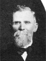
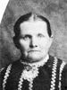
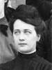
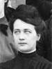
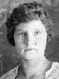
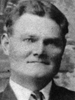
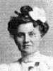
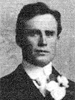
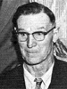
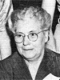

Anthony and Castina Lovell Christensen Family Group
Home
Histories
Charts
Photos
Maps
Restricted
News
Info
Contact
 symbol is a link to a history, and the chart
symbol is a link to a history, and the chart  symbol is a link to a family group chart.)
symbol is a link to a family group chart.)| ----> |  |
Anthony Christensen Born 20 FEB 1849 Ostrup,Vognsild,Aalborg,Denmark Died Castina Lovell Born 6 MAR 1858 Fillmore,Millard,Utah,USA Died 7 JAN 1912 Oak City,Millard,Utah,USA Married 14 Apr. 1873 | ||
|
John Lovell and Ane Pedersen |
   |
Christen Christensen Born 6 MAR 1874 Oak Creek,Millard,Utah,USA Died 29 Apr 1944 Aurora, UT Married Mary Ellen Jacobson 25 Nov. 1897 Manti, UT The 1st child of Anthony Christensen and Castina Lovell |
 |
Anna Metta Christensen Born 17 DEC 1875 Oak City,Millard,Utah,USA Died 26 Apr. 1936 Lynndyl, UT Married Joseph Eli Talbot 4 Sep. 1893 Oak City, UT The 2nd child of Anthony Christensen and Castina Lovell |
|
John Anthon Christensen Born 12 AUG 1877 Oak City,Millard,Utah,USA Died 29 Dec. 1958 Lindon, UT Married Francis Eva Harward 21 Nov 1906 Manti, UT The 3th child of Anthony Christensen and Castina Lovell |
|
Joseph Martin Christensen Born 7 JUN 1880 Oak City,Millard,Utah,USA Died 31 Mar 1947 Aurora, UT Married Tillie Sarilla Curtis 24 June 1903 Manti, UT Married Lula Payne 15 Apr 1926 Manti, UT The 4th child of Anthony Christensen and Castina Lovell |
 |
Niels Hyrum Christensen Born 23 JAN 1882 Oak City,Millard,Utah,USA Died 11 Feb 1920 Hinckley, UT Married Josephine Sorensen 8 Feb 1906 Manti, UT
The 5th child of Anthony Christensen and Castina Lovell |
 |
Sarah Elizabeth Christensen Born 12 AUG 1883 Oak City,Millard,Utah,USA Died 25 Apr. 1920 Oak City Married Joseph Platte Callister 16 May 1907 Manti, UT The 6th child of Anthony Christensen and Castina Lovell |
|
Edward Peter Christensen Born 29 MAR 1885 Oak City,Millard,Utah,USA Died 13 Sep. 1972 Delta, UT Married Ida Bennett 11 Sept. 1912 Manti, UT The 7th child of Anthony Christensen and Castina Lovell |
|
Lorenzo Henry Christensen Born 2 JAN 1887 Oak City,Millard,Utah,USA Died 19 Mar. 1947 Salt Lake City, UT Married Leah Bennett 17 Dec. 1913 Manti, UT The 8th child of Anthony Christensen and Castina Lovell |
 |
Willard Richard Christensen Born 10 MAR 1889 Oak City, Millard, Utah, USA Died 23 May 1970 Delta, UT Married Genevieve Wright 19 Apr 1923 Manti, UT The 9th child of Anthony Christensen and Castina Lovell |
|
Albert Clarence Christensen Born 2 SEP 1891 Oak City,Millard,Utah,USA Died 5 Nov. 1952 Oak City, UT Married Esther Aurora Nielsen 13 Apr. 1927 St. George, UT The 10th child of Anthony Christensen and Castina Lovell |
|
Sylvia Boletta Christensen Born 4 NOV 1894 Oak City,Millard,Utah,USA Died 18 Jan 1976 Orem, UT Married Alma Joshua Christensen 12 Sep. 1917 Salt Lake City, UT The 11th child of Anthony Christensen and Castina Lovell |
|
Mary Pearl Christensen Born 26 FEB 1896 Oak City,Millard,Utah,USA Died 28 Jan. 1987 Kaysville, UT Married Leroy Antone Anderson 16 Apr. 1924 Salt Lake City, UT The 12th child of Anthony Christensen and Castina Lovell |
|
Hilda Castina Christensen Born 1 SEP 1898 Oak City,Millard,Utah,USA Died 18 Dec. 1968 Delta, UT Married Ivan Morris Wright 18 Feb. 1926 Manti, UT The 13th child of Anthony Christensen and Castina Lovell |
* |
Anthony Lovell Christensen - Died as infant 18-24 MAR 1904 Oak City, UT The 14th child of Anthony Christensen and Castina Lovell |